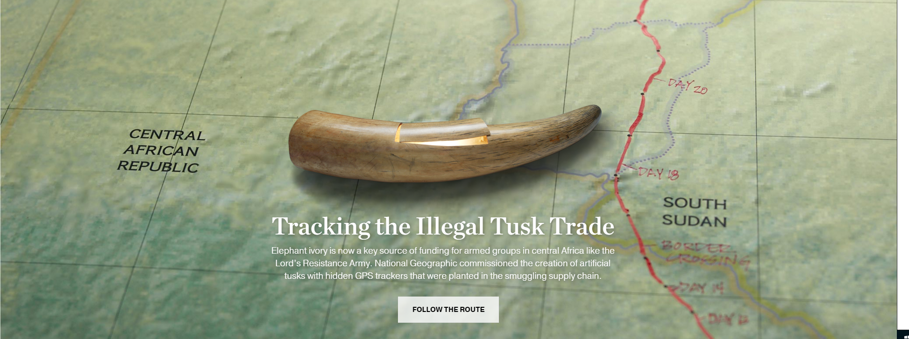
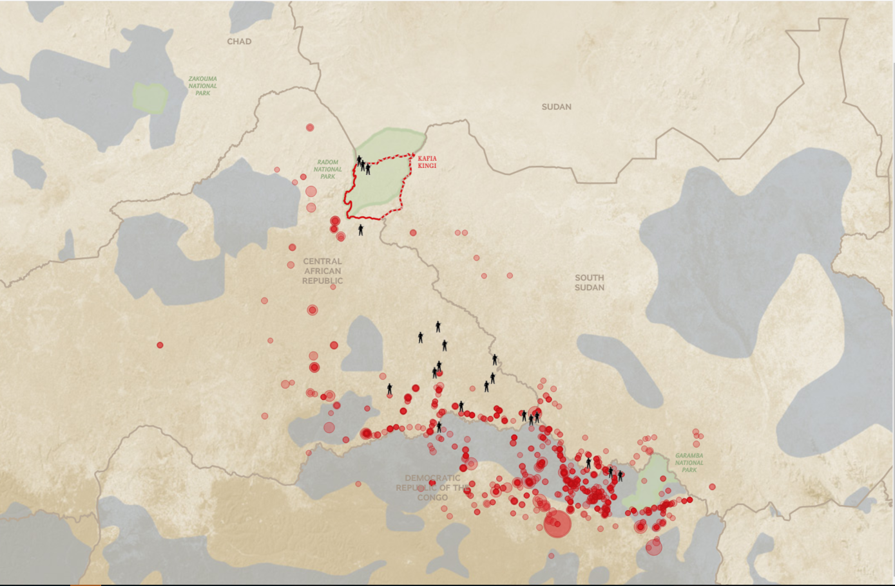
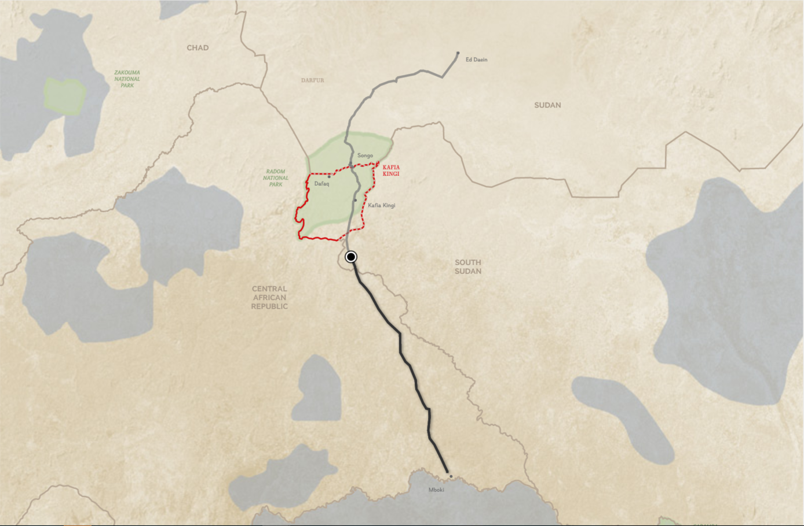
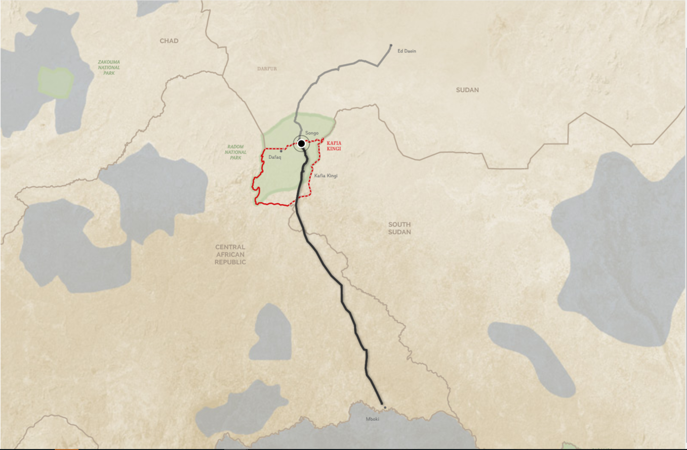
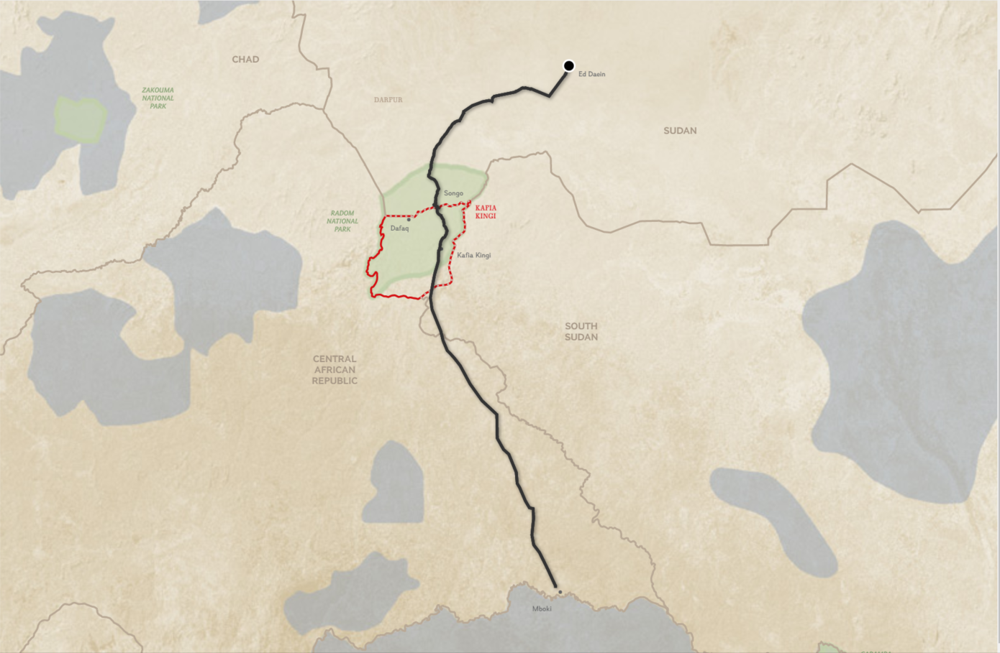

번호: 30.html
이름: 김겨레
전공: 신문방송학부
<A CASE WHICH CLEVERLY UTILIZED GPS TO TRACK DOWN ILLEGAL POACHING.>
Tracking the Illegal Tusk Trade
utilizing GPS devices

About the project:
Central Africa has lost 64% of its elephant population in just a decade from poaching. Effectively tracking and eliminating the illicit ivory trade will do substantially more than just protect wildlife. The illegal profits from this trade help support some of the most violent militias, terrorist organizations, and paramilitary groups throughout eastern Africa. National Geographics made an artificial ivory to track down illegal poaching. They designed an artificial elephant tusk → implanted GPS devices → monitored where they travel.

DAYS 1 TO 16:
Averaging 16 miles a day, the tusks cross their first border, into South Sudan. Total distance tracked 242 miles (389km)

DAYS 21 TO 44:
Smugglers hold the artificial tusks for three weeks at this camp in Kafia Kingi before heading north.

DAYS 45 TO 52:
The tusks are now moving faster, at 31 miles a day, likely by monitor vehicle. Total distance tracked 560 miles (901km)

DAYS 53:
At their latest known location, and based on their temperature sensors, the tusks could be either inside a building or buried in the ground. Total distance tracked 592 miles (953km)
This video is about the overall process of this project.
이 프로젝트에서 찾은 인사이트는 다음과 같다:
- GPS를 다양하게 이용할 수 있다.
- 어떤 것을 추적하는 것은 그 이면에 숨겨져 있던 사실을 발견 할 수 있게 한다.
- 센서의 측정 상황을 독자들에게 알려주는 것 자체가 효과적이고 흥미로운 인터렉션 일 수 있다.